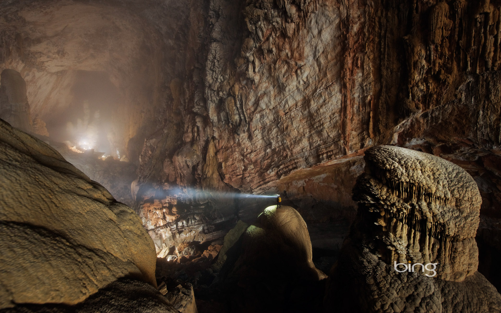

Hang Sơn Đoòng nằm trong vùng lõi của Vường quốc gia Phong Nha – Kẻ Bàng, tỉnh Quảng Bình – là một hang động mới được Hiệp hội nghiên cứu hang động Hoàng gia Anh khám phá và công bố là hang động lớn nhất thế giới trong năm 2009 – 2010 và được đưa vào khai thác theo hình thức du lịch khám phá mạo hiểm từ năm 2013.
Với cách khai thác hạn chế số lượng người tham gia, số lượng người chinh phục thành công Hang Sơn Đòng hiện tại thậm chí còn ít hơn rất nhiều so với số lượng người đã từng đứng trên đỉnh Everest. Hãy tham gia vào chuyến chinh phục Hang Sơn Đoòng và trở thành một trong những người may mắn trải nghiệm một trong những kỳ quan có một không hai trên thế giới.
Hãy tưởng tượng chuyến tham quan bằng việc trekking vào sâu trong hang động lớn nhất thế giới sẽ là chuyến thám hiểm thật sự không giống bất cứ chuyến tham quan nào khác. Bên trong một hang động có thể chứa được chiếc Boeing 747 – đây thực sự là một khung cảnh ngoài sức tưởng tượng với những khối thạch nhũ, măng đá khổng lồ treo trên trần hang động hoặc mọc lên từ mặt đất, nhìn từ xa trông giống như những sinh vật ngoài hành tinh với những hình thù kỳ lạ. Có cả một khu rừng nguyên sinh ở trong hang động – có lẽ bạn sẽ không tin rằng đó là sự thật cho đến khi bạn thật sự nhìn thấy nó ở trong Hang Sơn Đoòng! Sương mù luôn hiện diện và phủ kín khu vực này, do đó ở đây có điều kiện thời tiết khí hậu riêng, tách biệt hẳn so với khí hậu bên ngoài. Bạn có thể tìm thấy những hành lang hoá thạch xuất hiện ở đây, minh chứng cho sự sống tồn tại trong hang động cách đây hàng triệu năm.

Khi tiếp cận cửa hang Sơn Đoòng, từng luồng gió mát lạnh thổi từ trong hang sẽ xua tan hết mọi mệt mỏi sau một khoảng thời gian băng rừng lội suối vất vả. Sương mù mờ ảo, gió lạnh phảng phất tạo nên cảm giác phấn khích lạ thường – dường như có những thứ bí ẩn kỳ diệu vượt ngoài sức tưởng tượng đang chờ bạn khám phá ở phía trước.
HANG SƠN ĐOÒNG ĐƯỢC PHÁT HIỆN NHƯ THẾ NÀO?
Từ khi còn là thiếu niên, Hồ Khanh đã trở thành một trong những sơn tràng như cách gọi của người địa phương trong vùng, thường trải qua những chuyến đi nhiều tuần vào sâu trong những khu rừng của Vườn quốc gia Phong Nha – Kẻ Bàng để bẫy thú rừng và khai thác gỗ với thu nhập rất ít ỏi. Vào năm 1990, trong một chuyến đi vào rừng như thường lệ, Hồ Khanh vô tình phát hiện một cửa hang nhỏ lấp ló sau vách núi đá. Khi đến gần, Hồ Khanh thấy những đám sương mù dày đặc thổi ra từ cửa hang nhỏ và từ đó có thể nghe thấy âm thanh của một dòng suối chảy xiết từ trong hang vọng trở ra.
Khi cảm nhận được luồng gió lạnh từ trong hang thổi ra, Hồ Khanh quyết định quay trở lại mà không kiểm tra gì thêm. Sau khi trở về nhà, Hồ Khanh quên mất vị trí chính xác của cửa hang và hoàn toàn không quan tâm gì thêm vì cho rằng nó cũng như là một trong rất nhiều cái hang bình thường khác mà anh vẫn hay nhìn thấy trong mỗi chuyến đi rừng của mình.
Tại thời điểm này, Howard Limbert và Deb – hai thành viên của Hiệp hội hang động Hoàng gia Anh (BCRA) – đang ở Phong Nha và tiến hành các cuộc tìm kiếm, khảo sát hang động trong vùng. Một lần trò chuyện với Howard, Hồ Khanh tình cờ nhắc đến cửa hang mà ông vô tình nhìn thấy với những luồng gió mạnh, sương mù dày đặc cùng với những âm thanh vọng ra từ trong hang. Howard và Deb rất phấn khích và thúc giục Hồ Khanh tiến hành nhiều cuộc tìm kiếm hang động này. Sau nhiều lần cố gắng tìm kiếm nhưng thất bại, mọi người đều nghĩ rằng sẽ chẳng bao giờ tìm thấy cửa hang bí ẩn này và đinh ninh rằng nó chẳng bao giờ tồn tại trên đời.
Mọi chuyện tưởng chùng kết thúc tuy nhiên Hồ Khanh vẫn âm thâm tìm kiếm cửa hang bí ẩn trong nhiều năm sau đó. Vào năm 2008, trong một chuyến đi săn khác Hồ Khanh may mắn tìm lại dược vị trí cửa hang tưởng chừng đã bị lãng quên. Ông cẩn trọng ghi lại đường đi trong đầu và tìm cách liên lạc với Howard. Đến năm 2009, Hồ Khanh dẫn Howard, Deb và một số chuyên gia hang động khác quay lại cửa hang, mở đầu cho những chuyến khảo sát kỹ hơn sau này. Những gì công bố sau đó về hang động mới được đặt tên là Hang Sơn Đoòng trở nên nổi tiếng và được cả thế giới biết đến là hang động lớn nhất thế giới.
ĐỊA CHẤT
Vườn quốc gia Phong Nha – Kẻ Bàng có hệ thống núi đá vôi cổ nhất Châu Á, hình thành cách đây 400 đến 450 triệu năm. Việc phân tích các mẫu trầm tích hóa thạch xác định Hang Sơn Đoòng hình thành tương đối trẻ – có niên đại cách đây 3 triệu năm tuổi.
Hang Sơn Đoòng hình thành trên một đoạn đứt gãy của dãy Trường Sơn và bị dòng nước sông Rào Thương ăn mòn qua hàng triệu năm đã tạo thành đường hầm khổng lồ bên dưới lớp núi đá vôi. Những vết nứt trên trần hang bị ăn mòn và sụt lún, tạo thành những hố sụt lớn thông ra bên ngoài. Những giọt nước rơi xuống từ trên trần hang hàng triệu năm tạo nên những viên ngọc trai hang động có kích thước lớn bằng quả bóng chày.
HANG SƠN ĐOÒNG LỚN ĐẾN MỨC NÀO?
Tại thời điểm này, Hang Én đứng thứ 3 thế giới với kích thước hùng vỹ của nó. Hang Én trải dài hơn 2km xuyên qua khối đá vôi khổng lồ ngay trong vùng lõi của Vườn quốc gia Phong Nha – Kẻ Bàng. Có 3 lối vào Hang Én, trong đó cửa hang lớn nhất và nổi tiếng nhất có chiều cao 120m và chiều rộng 140m.
Những khu rừng nguyên sinh hoang sơ, rậm rạp bao quanh Hang Én tạo nên một khung cảnh kỳ vỹ mà phải tận mắt chứng kiến bạn mới tin là nó có thật. Trong một số khu vực khác của Hang Én, vòm hang cao lên đến 100m và chiều rộng hơn 180m, lớn đến mức ánh sáng cực mạnh từ các đèn pha chuyên nghiệp cũng không thể chạm đến những vách hang.
BẢN ĐOÒNG
Để đi đến được Sơn Đoòng, hành trình của các bạn sẽ phải ghé ngang qua Bản Đoòng – một bản nhỏ của người Bru-Vân Kiều với khoảng hơn 40 người sinh sống biệt lập trong vùng lõi của Vườn quốc gia Phong Nha – Kẻ Bàng. Cuộc sống của đồng bào ở đây còn rất khó khăn do địa hình bị cô lập hoàn toàn với thế giới bên ngoài.
Hiện tại cách duy nhất để đến Bản Đoòng là đi bộ băng rừng. Bên cạnh đó do nằm ngay trong vùng lõi của Vườn quốc gia, việc trồng và khai thác các loại cây kinh tế là không được phép. Việc đưa vào khai thác tuyến tham quan Hang Sơn Đoòng và Hang Én ngang qua đây đã mở ra cơ hội phát triển bền vững cho Bản Đòong, những người dân sinh sống ở đây có thể kiếm thêm thu nhập từ việc bảo vệ bền vững hệ sinh thái của khu vực. Với bản tính hiếu khách, niềm nở người dân Bản Đoòng đã để lại cho nhiều du khách ghé thăm những ấn tượng rất tốt đẹp và trở thành một điểm nhấn khó quên trong suốt chuyến đi. Bản Đoòng là một ví dụ điển hình trong việc bảo tồn các giá trị văn hóa, tinh thần của đồng bào dân tộc thiểu số khi mà những nét văn hóa của họ vẫn còn nguyên vẹn qua nhiều thập kỷ.